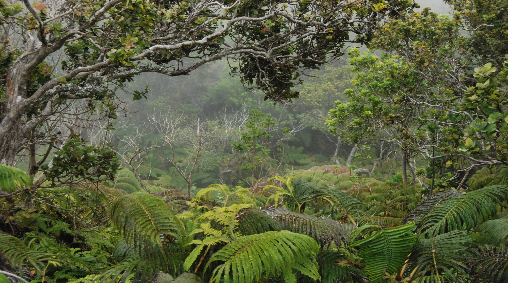
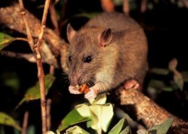
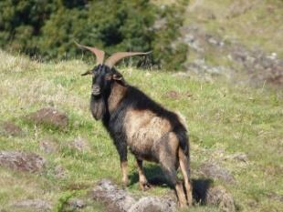
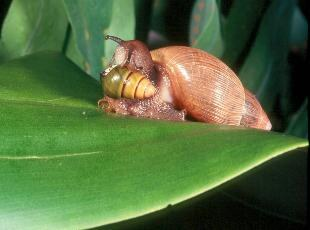
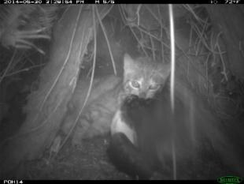
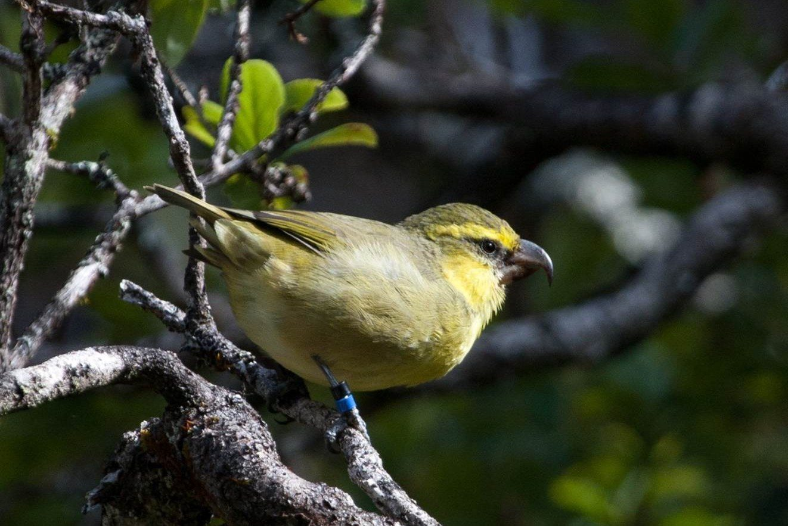
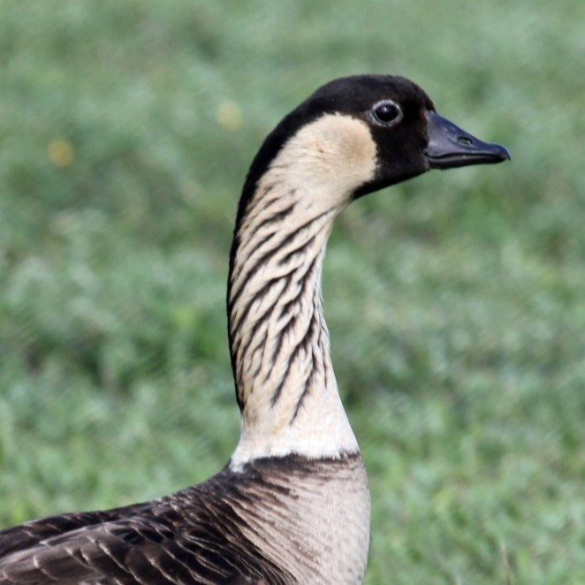
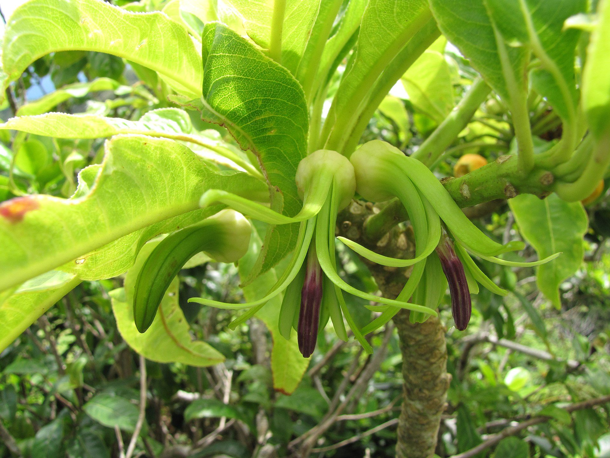
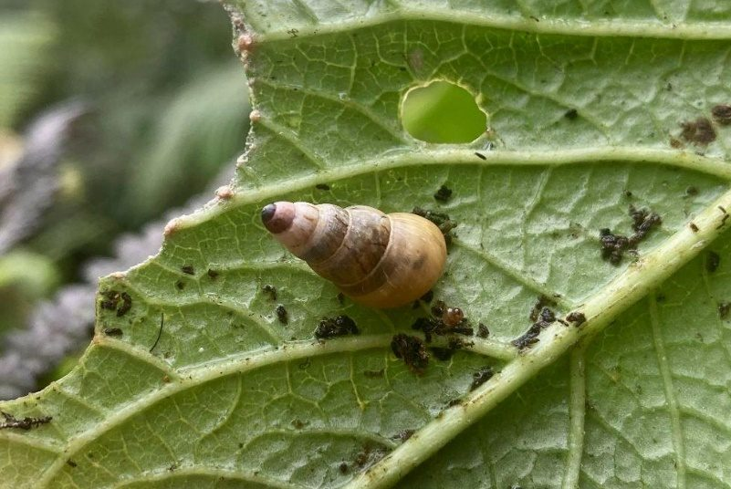
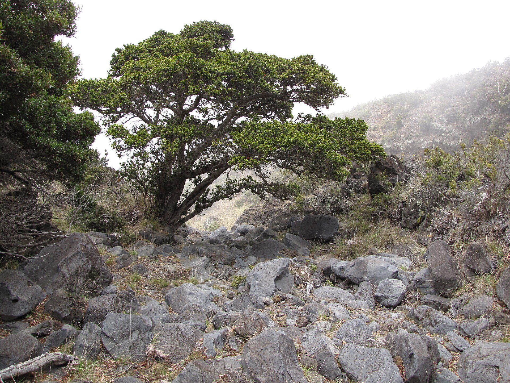

A roadmap to prevent extinctions and recover Maui Nui's native species
The first islands-wide, landscape-scale plan showing where conservation actions can most effectively prevent extinctions, recover at-risk species, and restore native ecosystems across Maui, Molokaʻi, Lānaʻi, and Kahoʻolawe.
One of the most severe extinction crises in the nation
With less than 0.2 percentplan p.iv, line 122 of the nation's land area, Hawaiʻi accounts for 29 percentplan p.iv, lines 122-123 (USFWS 2026) of its imperiled species. More than 60 percentplan p.iv, lines 123-124 of Hawaiʻi's native ecosystems have been destroyed or highly degraded. Many native species now survive only in small, scattered populations in high-elevation refuges or fenced areas.
Invasive predators, ungulates (hoofed animals such as goats, deer, and cattle), weeds, disease, fire, and climate change continue to drive declines.plan p.iv, lines 125-126; ungulate examples p.4-5 lines 488-491
Many good plans already exist, but they are not integrated at the landscape or management level. Managers must reconcile dozens of documents with different assumptions and scales while working with limited budgets and staff.plan p.iv, lines 127-131




The question is not only that 442 species are at risk. It is where each species should be recovered, what actions will do the most good, and when they must happen.plan p.iv, lines 131-133
Three integrated goals
Prevent extinctions
of the most imperiled native plants and animals.
Recover all at-risk species
to healthy, self-sustaining population levels.
Protect and restore native ecosystems
so they provide habitat for all Maui Nui biodiversity and sustain clean water, cultural values, and local economies.
Who, where, what and when
The MNLCP uses an Integrated Multi-Scale Conservation Planning (IMCP) approach. It links several analyses into one decision-support system, so managers can answer four practical questions.
Who needs help?
The at-risk species list, built with seven expert Taxonomic Teams.
Taxonomic Teams · DOFAWWhere to manage?
Spatial prioritization maps the conservation footprints where recovery can happen.
Spatial prioritization · USGS-ledWhat to do?
Action prioritization, through a modified Priority Threat Management (PTM) process, weighs the benefit, feasibility, and cost of conservation strategies.
Action prioritization · UH Mānoa-ledWhen to do it?
DOFAW land managers turned the results into implementation guidance: emergency actions first, then a recommended sequence of recovery actions.
Implementation · DOFAW-ledEcosystem prioritization, led by UH Hilo, adds the wider landscape. It identifies where protecting and restoring native ecosystems will benefit all of Maui Nui's plants and animals.
442 at-risk species
Experts identified 442plan p.v line 162 native species at risk of extinction within the next 20 years without significant intervention. Only 202plan p.v line 163 are protected under state or federal endangered species laws. The other 240plan p.v line 164 were identified by species experts because of very small or declining populations, restricted ranges, or climate vulnerability. Of the 442, 163plan p.v line 165 could be lost within five years without immediate emergency action.
View as a tableData
| Group | At risk | Listed | Imminent |
|---|---|---|---|
| Plants | 197 | 175 | 102 |
| Terrestrial arthropods | 172 | 8 | 9 |
| Terrestrial snails | 49 | 3 | 49 |
| Aquatic invertebrates | 11 | 4 | 1 |
| Waterbirds | 5 | 5 | 0 |
| Forest birds | 4 | 3 | 2 |
| Seabirds | 3 | 3 | 0 |
| Hawaiian hoary bat | 1 | 1 | 0 |
Source: plan Table 1 (Executive Summary).

Expert-led footprintForest birds
Four at-risk forest birds survive only on East Maui, two facing imminent extinction; controlling mosquito-borne avian malaria is the top priority, followed by returning birds to West Maui and Molokaʻi.
Explore the strategy, public domain") Expert-led footprint
Expert-led footprint
Seabirds
Three listed seabirds nest across all four Maui Nui islands; none faces imminent extinction, and predator-proof fencing, predator control and safer infrastructure can bring them above 50 percent persistence with existing tools.
Explore the strategy
Expert-led footprintWaterbirds
All five native waterbirds are listed and two are gone from Maui Nui; the plan builds on past success with wetland protection, predator fencing and control, and later reintroductions.
Explore the strategy
Algorithmic prioritizationPlants
The largest group, with 197 at-risk plants and 102 facing imminent extinction; emergency PEPP work, a 317-planning-unit recovery footprint prioritized with OptimTFE and refined by experts, and new tools against pests that cannot be controlled today.
Explore the strategy
Algorithmic prioritizationTerrestrial snails · kāhuli
All 49 at-risk snails could be lost within five years, so the plan's first goal is to prevent their extinction by keeping three populations of each species safe in 32 predator-proof kīpuka kāhuli and a Maui laboratory.
Explore the strategy Algorithmic prioritization
Algorithmic prioritization
Terrestrial arthropods
Of 172 at-risk native arthropods, only 32 have enough data to map recovery habitat, so the plan pairs emergency protection for nine yellow-faced bees and habitat restoration with targeted surveys for the other 140.
Explore the strategy
Expert-led footprintAquatic invertebrates
Eleven at-risk damselflies, anchialine pool shrimp and freshwater snails depend on streams, wetlands and anchialine pools; the plan protects the last Maui Nui site of one damselfly and restores stream flows while keeping invasive species out.
Explore the strategy Plan strategyHawaiian hoary bat · ʻōpeʻapeʻa
Maui Nui's only native land mammal is endangered but not at imminent risk; the plan focuses on cutting wind-turbine deaths, protecting forests and wetlands in other groups' footprints, and learning how to measure bat trends.
Explore the strategyConservation footprints
For each taxonomic group, the plan maps the planning units (PUs, areas of about 2 km² each)plan p.vi, line 228 that contain the existing or restorable habitat needed to reach recovery goals. These maps are called recovery footprints. Combined across all groups:plan p.vi, lines 228-230
- The full recovery footprint covers 492plan p.vi, line 237 planning units and provides habitat for 299plan p.vi, lines 237-238; see notes (Ch 6i p.81 line 3246 gives 250) at-risk species.
- The priority footprint narrows this to 216plan p.vi, line 239; see notes (release candidate 237) planning units, about 43 percentplan p.vi, line 239 of the full footprint, while still supporting habitat for 267plan p.vi, line 240; see notes (release candidate 305 taxa) at-risk species. These are the most important places to start.
- About 66 percentplan p.vi, line 242 of the footprint is already on conservation-oriented land, and about halfplan p.vi, line 243 already has some ungulate fencing.
- The footprints span all four islands, centered on upland Haleakalā, West Maui, East Molokaʻi, and Lānaʻihale, and generally have above-average climate resilience.plan p.vi-vii, lines 243-246
- 143plan p.vii, line 247 species, mostly Terrestrial arthropods, still lack the data needed to map recovery habitat. The plan sets out targeted surveys so these species can be added over time.

Priority conservation actions
Working with about 100plan p.vii, line 251 managers and scientists, the Action Prioritization Team evaluated the expected benefit, feasibility, and cost of 27plan p.vii, line 252 conservation strategies (17 single-focus strategies and 10 combinations)plan p.vii, lines 252-253 for 17plan p.vii, line 253 species groups. The target is at least a 50 percentplan p.vii, line 254 chance that each group persists with viable, self-sustaining populations over 20 years.
No single strategy is enough.
Two complementary combination strategies, S25 (plant- and invertebrate-focused) and S27 (bird- and bat-focused), come closest to meeting every group's needs when implemented together.plan p.vii, lines 256-258
Doing nothing, or only what is done now, is not enough.
Current efforts help, especially for Seabirds and Waterbirds, but feasible new actions improve outcomes for every group.plan p.vii, lines 259-261
Foundational habitat work pays off.
Ungulate fencing and removal, weed control, predator control, and wetland management benefit many species at once.plan p.vii, lines 262-265
New tools are the most important investment.
Future tools for rare plant and invertebrate conservation (S13) ranked in the top three actions for 13 of the 17plan p.vii, lines 266-268 species groups.
Some groups are within reach with proven methods.
Seabirds, Waterbirds, and the Hawaiian hoary bat can reach the 50 percent goal without unproven technologies. Plants remain the hardest group to secure.plan p.vii, lines 271-274
Emergency first, then sequenced recovery
The 163plan p.viii, line 286 species facing imminent extinction need immediate emergency measures: seed banking and captive propagation, very small predator-proof exclosures, and intensive protection of the last wild populations. Examples include emergency propagation for 102plan p.viii, line 289 plants, a network of kīpuka kāhuli (snail exclosures) and an ex situ laboratory for all 49plan p.viii, lines 289-290 at-risk snails, and protection of the only known Maui Nui population of the damselfly Megalagrion nesiotes.plan p.viii, lines 286-291
Beyond emergencies, Taxonomic Teams recommended an implementation sequence for each group. Start with the highest-benefit actions and the foundational steps (fencing, ungulate removal, weed control) that set the stage for later reintroductions. Pursue cost-effective, field-ready actions as opportunities arise.plan p.viii, lines 291-294
Updated as conditions, knowledge and funding change
The MNLCP is designed for a 20-yearplan p.v, line 154 implementation period and is delivered as a living system. It includes the Adaptive Conservation Planner, a spatial tool managers can use to build annual work plans and update priorities as conditions, knowledge, and funding change.plan p.v, lines 154-157 Monitoring and adaptive management track progress over time.plan p.ix, lines 332-334
What success requires
Together, these steps give DOFAW and its partners a clear, science-based pathway to ensure that Maui Nui's native species and ecosystems not only persist but thrive once again.plan p.ix, lines 335-337
The MNLCP treats Maui Nui's biodiversity crisis not as an insurmountable problem but as a finite, solvable challenge. Realizing it will require leadership and partners to:plan p.ix, lines 318-319
- Fund emergency actions now for the 163plan p.ix, line 320 species that could be lost within five years.
- Invest in new tools for landscape-scale control of mosquitoes, predatory snails, rats, and other key threats, and for captive rearing and propagation of at-risk plants and invertebrates.
- Sustain and expand foundational management in the recovery footprint: fencing, ungulate removal, weed and predator control, wetland and instream-flow management, and fire prevention.
- Build partnerships with private landowners, communities, and agencies.
- Protect, manage, and restore native ecosystems.
- Fill data gaps through targeted surveys for the 143plan p.ix, line 331 species that cannot yet be mapped.
- Use the plan as a living system, with the Conservation Planner guiding annual work plans and budgets.plan p.ix, lines 320-334